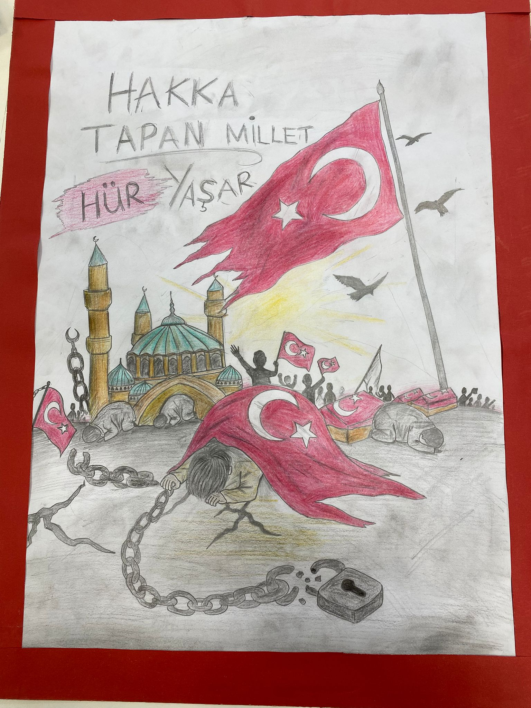
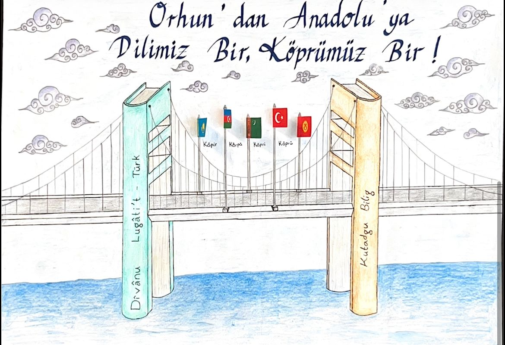
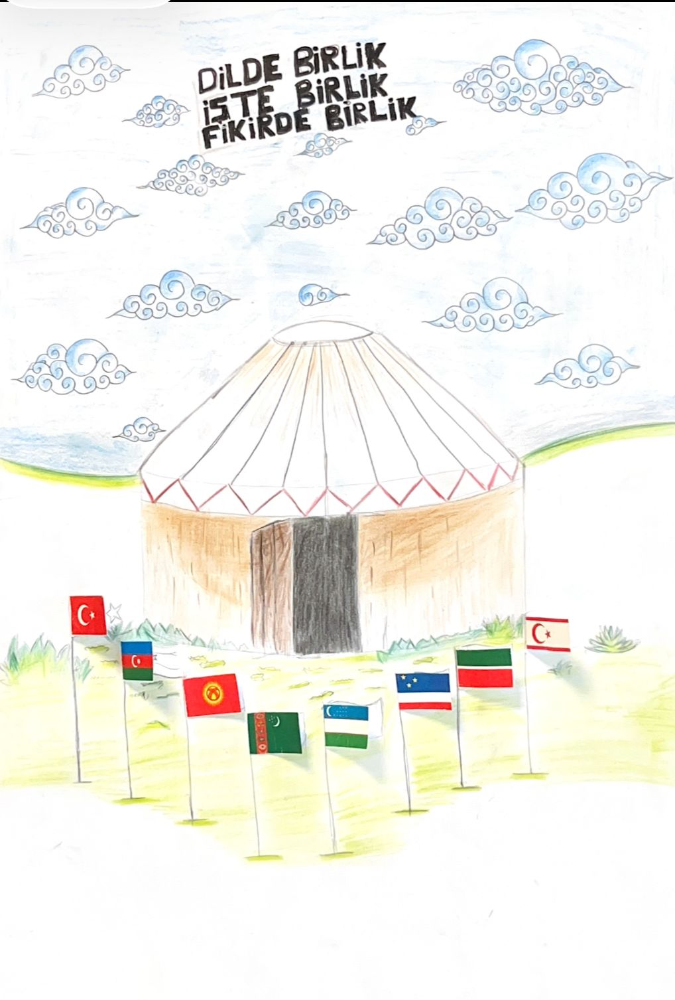
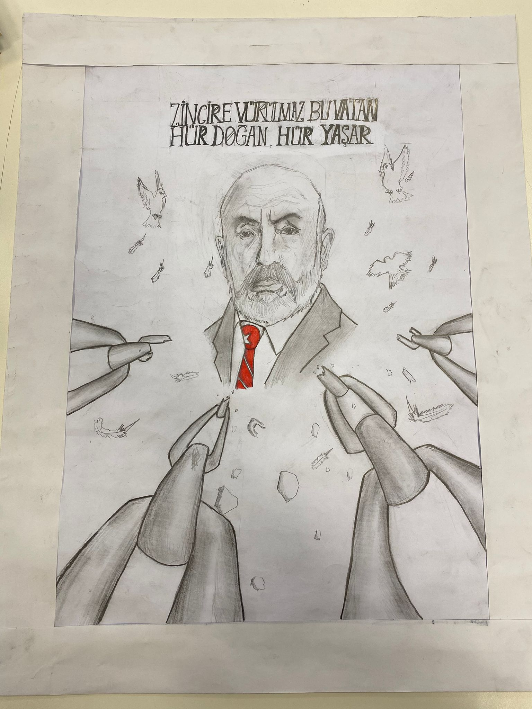

Bu afişte ağaç motifi kullanılarak Türk dünyasının ortak köklerden beslenen kültürel ve dilsel birliği anlatılmıştır. Ağacın dallarında yer verilen motifler, farklı coğrafyalarda yaşayan Türk topluluklarının kültürel çeşitliliğini temsil ederken; aynı gövdede birleşmeleri ortak geçmişe ve ortak değerlere vurgu yapmaktadır.
Öğrenciler bu çalışma ile dilin, kültürün ve tarihin birleştirici gücünü sanatsal bir anlatımla ifade etmiştir.

AFİŞ 02 — BAĞIMSIZLIK
"Hakka Tapan Millet Hür Yaşar"
Bu çalışmada bağımsızlık ve özgürlük teması ön plana çıkarılmıştır. Türk bayrağı, kırılmış zincirler ve tarihî mimari unsurlar kullanılarak milletin özgürlük mücadelesi simgesel bir şekilde anlatılmıştır.
Afiş, milletimizin bağımsızlık uğruna gösterdiği kararlılığı ve vatan sevgisini yansıtırken öğrencilerin millî bilinç ve tarih farkındalığı geliştirmesine katkı sağlamıştır.
AFİŞ 03 — DİL & KİMLİK
"Dil" Temalı Afiş
Bu afişte dilin milletleri bir araya getiren güçlü bir bağ olduğu vurgulanmıştır. Aynı çatı altında birleşen farklı Türk toplulukları, ortak kültürel değerlerin dil aracılığıyla yaşatıldığını göstermektedir.
Öğrenciler, Türk dünyasının farklı bölgelerini temsil eden bayraklar ve sembollerle kültürel birlik fikrini görselleştirmiştir.

AFİŞ 04 — KÖPRÜ & İLETİŞİM
"Dilimiz Bir, Köprümüz Bir"
Köprü metaforu üzerinden hazırlanan bu çalışma, Türk dünyası arasındaki iletişimi ve kültürel bağı simgelemektedir. Farklı bayrakların aynı köprü üzerinde yer alması; ortak dil, tarih ve kültür sayesinde kurulan gönül bağlarını ifade etmektedir.
Etkinlik sürecinde öğrenciler, dilin insanlar arasında yalnızca iletişim değil aynı zamanda birlik sağlayan bir unsur olduğunu kavramıştır.

AFİŞ 05 — DAYANIŞMA
"Dilde Birlik, İşte Birlik, Fikirde Birlik"
Bu afişte ortak dilin kültürel dayanışmayı güçlendiren önemli bir unsur olduğu anlatılmıştır. Çadır figürü Türk kültürünün ortak yaşam anlayışını temsil ederken çevresindeki bayraklar Türk dünyasının birlik düşüncesini simgelemektedir.
Öğrenciler, ortak değerlerin korunmasının kültürel mirasın devamlılığı açısından önemini bu çalışma ile ifade etmiştir.
AFİŞ 06 — COĞRAFİ BİRLİK
"Dilde Farklı, Anlamda Biriz"
Harita ve bayraklar kullanılarak hazırlanan bu afişte Türk dünyasının farklı coğrafyalarda yaşasa da ortak bir tarih ve kültür etrafında birleştiği anlatılmıştır.
Öğrenciler, farklı lehçelerin kültürel zenginlik oluşturduğunu ancak ortak hatıraların ve değerlerin toplumları bir arada tuttuğunu vurgulamıştır.

AFİŞ 07 — MİLLÎ MÜCADELE
Mehmet Akif Ersoy Temalı Afiş
Bu afişte, milletimizin bağımsızlık ruhunu ve özgürlük mücadelesini eserlerinde güçlü bir şekilde yansıtan Mehmet Akif Ersoy konu alınmıştır. Çalışmada kullanılan kalem figürleri; düşüncenin, sanatın ve edebiyatın toplum üzerindeki etkisini simgelerken özgürlük vurgusu millî mücadele ruhunu ön plana çıkarmaktadır.
Öğrenciler bu çalışma ile millî değerlerin edebiyat aracılığıyla gelecek nesillere aktarılmasının önemini ifade etmiştir.